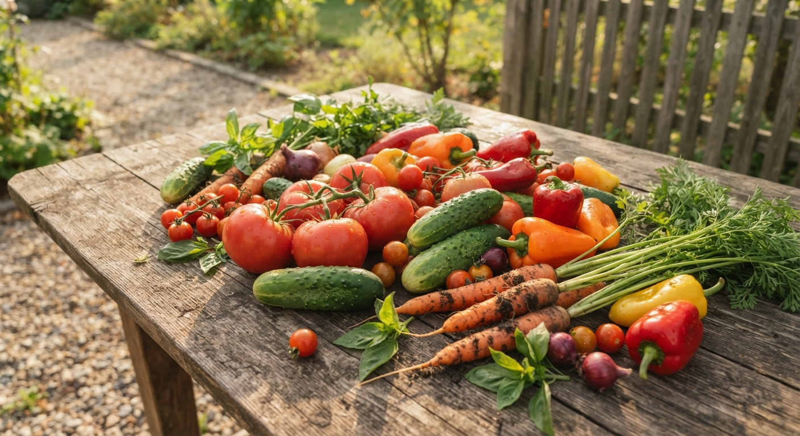
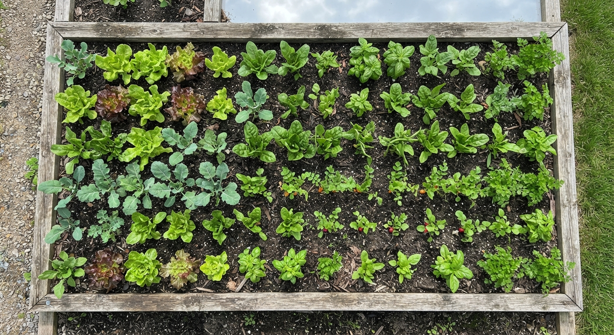
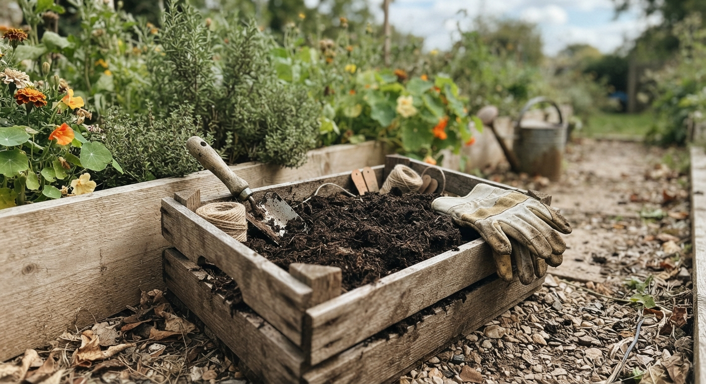

Пълни указания за сортове, засаждане, колчестене и богата реколта.

Всичко за почвените смеси, температурата и пикирането на младите растения.

Как да превърнем органичните отпадъци в хумус.
Най-добрите практики за напояване в летните жеги.
Защита на растенията без химия и изкуствени пестициди.
Подготовка на клубените, засаждане и правилно загърляне.
Поливане, съвети и методи за хрупкави и сочни зеленчуци.
Всичко за отглеждането на едри и месести български чушки.
Как да настроим pH и да обогатим земята с компост.